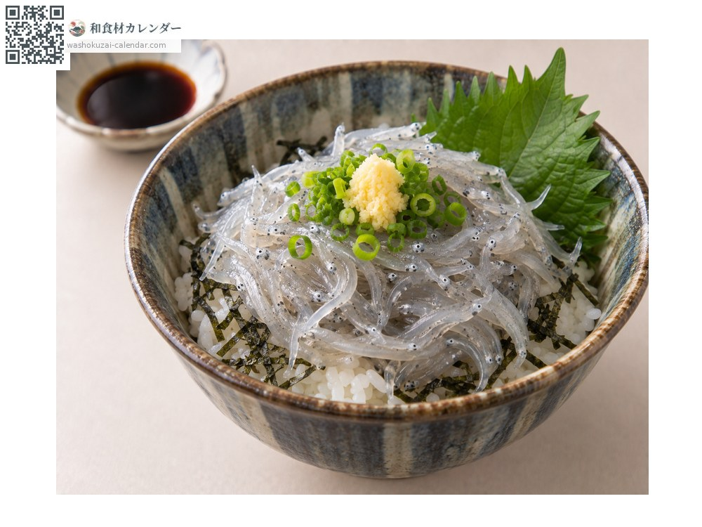
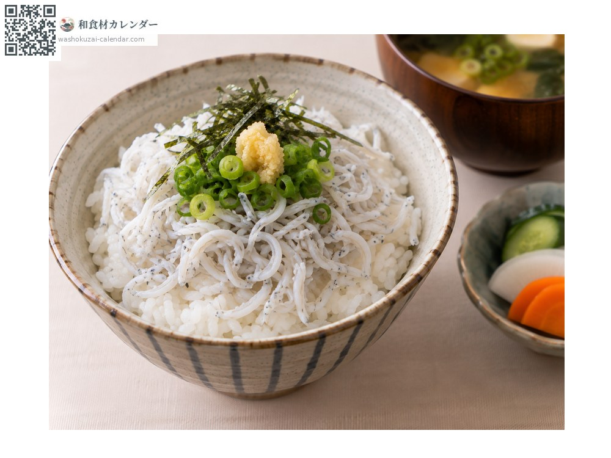
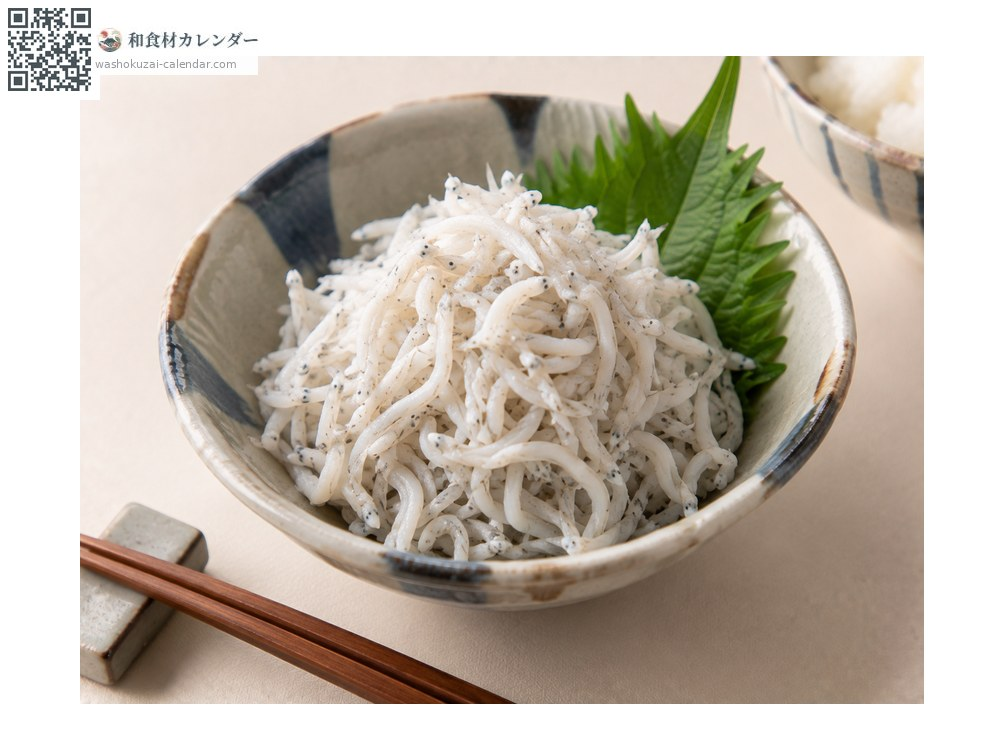
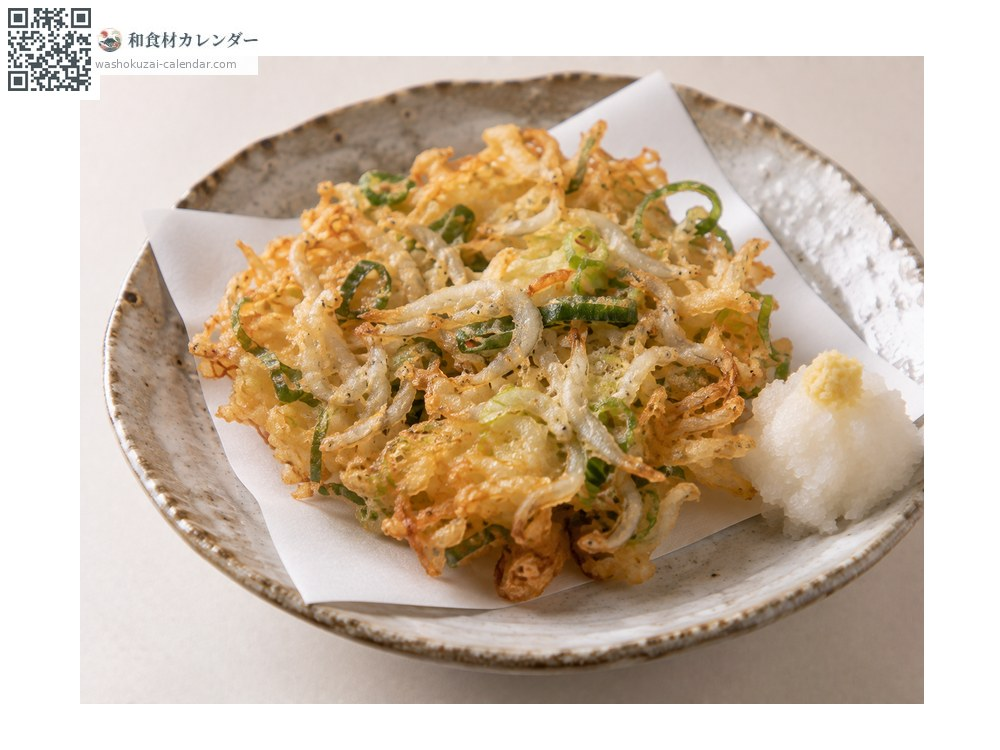

Seafood
Whitebait
シラス しらす shirasu
Also known asshirasu
At its best in Apr, May, Jun, Oct, Nov

When it is at its best
Jan
Feb
Mar
Apr
May
Jun
Jul
Aug
Sep
Oct
Nov
Dec
In seasonAvailable
How to cook

Raw whitebait
Only available at the source. Served with ginger and soy sauce.

Kamaage shirasu (boiled whitebait)
Boiled. Served straight over rice.

Dried whitebait
Lightly dried, so it keeps longer.

Kakiage (mixed tempura fritter)
Fried together with chopped spring onion.
How to choose
Evenly sized and translucent. Raw shirasu must be landed the same day.
Storage
Raw shirasu must be eaten the same day. Boiled keeps two to three days refrigerated, and freezes.
Main areas
Good to know
A collective name for juvenile sardines. Suruga Bay in Shizuoka and the Shonan coast in Kanagawa are known sources.